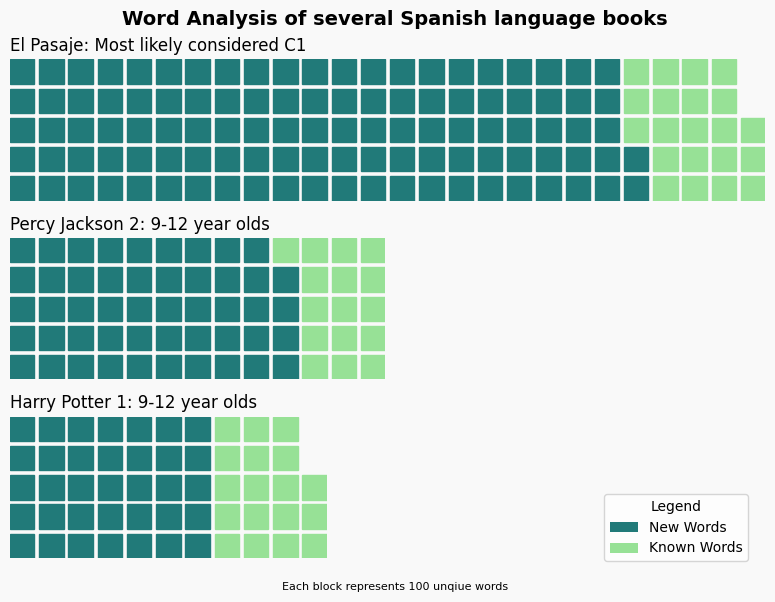

Foreign Language Text Analyzer
Personal Project | 2024
The program takes a foreign-language PDF and processes the words, creating a frequency list accompanied with an example sentence of that word. From there, the CSV file can be easily imported into Anki flashcards for memorization.
Once processed, I can view the difficulty of a book at a glance, and use the interactive bar chart below to review most-frequent vocabularly. Looking above, though technically I know a higher number of words in El Pasaje, Percy Jackson and Harry Potter should be considered much easier due to their vastly smaller vocabulary used.

Waffle chart visualizing known/unknown words per book

Interactive bar chart of vocabulary frequency

A flow chart of how the program works